An interactive vocabulary quest inspired by this lesson. It opens in a new tab.
More than a quarter century after it first aired, a twenty-two-minute episode of Friends is still teaching English to learners around the world. The lesson deck “The One Where We Learn English — Mastering Vocabulary & Storytelling with Friends (Season 3, Episode 10)” takes one December 1996 broadcast and turns it into a complete language course: three intertwined storylines, nine high-value expressions, a true-or-false trivia round, and a short-answer challenge. Pay attention to the title the deck chooses for itself, because it is a loving parody of the show’s own naming formula, in which every episode begins with the words “The One Where…” or “The One With…”.
The educational value of the material comes from its method. Rather than pulling words from a dictionary list, the deck anchors every phrase to a moment in the story: two weeks’ notice is attached to Rachel’s dramatic exit, the munchies to Ross’s midnight cookie hustle, and work on commission to Joey’s Christmas tree job. It should be noted that the deck was assembled with Gemini Notebook, Google’s AI-powered study tool, which gives the slides a coherent visual world of sunlit coffee bars, corkboards, and chalkboard diagrams. This article walks through the whole lesson step by step, quotes the slides directly, and adds interactive practice so the vocabulary sticks.
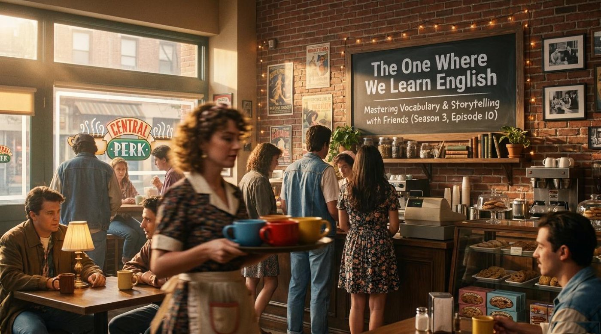
The episode — The One Where Rachel Quits — weaves three plotlines together, and the deck introduces them as three snapshots pinned to a corkboard. The first is purely professional. The deck describes it in one breath: “Rachel realizes she hates serving coffee, quits her job to pursue fashion, and faces The Fear.” The second is a comedy of errors in which “Ross accidentally breaks a little girl’s leg and must sell hundreds of cookies to win her a trip to Space Camp.” The third is a tiny eco-drama, because “Phoebe goes to war against the Christmas tree industry to save old, brown pines from the woodchipper.”
For a language learner, the structure matters as much as the words. Each storyline carries its own vocabulary field: Rachel’s story is the world of workplace English, Ross’s story is the world of action and consequence, and Phoebe’s story is the world of belief versus business. Notice that the deck groups its nine key expressions into exactly these three sets, so the plot becomes a memory palace: when you later need the phrase work on commission, you remember Joey standing among the pines.
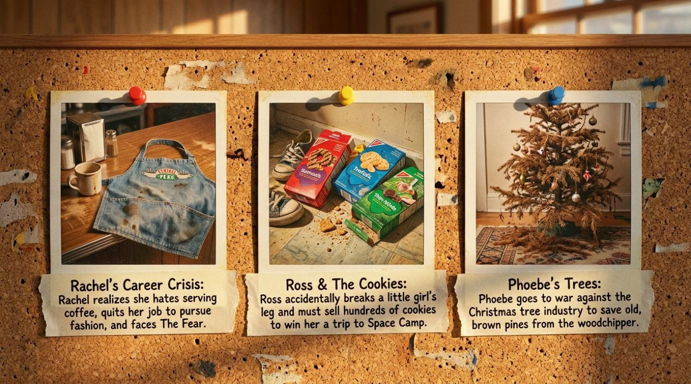
The deck devotes a whole chalkboard diagram to Rachel’s arc and calls it “Rachel’s Circular Career Path.” The circle has four steps, and the slide states each one plainly. “Step 1: The Breaking Point. Manager Gunther asks Rachel to retrain to learn the tray spot. She realizes her life officially sucks.” Then comes the turning point: “Step 2: Embracing The Fear. Joey and Chandler convince her she needs the anxiety of unemployment to motivate her. She gives her notice.” Opportunity knocks next: “Step 3: The Big Break. Joey gets her an interview at Fortunata Fashions. She gets the job!” And finally the punchline that closes the loop: “Step 4: The Twist. Her new fashion boss, Mr. Kaplan Jr., just wants her to make his coffee.”
The material’s own example of this idea comes straight from the workplace vocabulary set, which notes that “Rachel intends to give Gunther her two weeks’ notice but impulsively quits on the spot.” It is a perfect illustration of the gap between textbook professionalism and real-life emotion, and it shows why the phrase two weeks’ notice is worth learning in context rather than from a list. The key point is that English for quitting a job politely exists precisely because most people do it in a hurry.
“Manager Gunther asks Rachel to retrain to learn the tray spot. She realizes her life officially sucks.”
— the lesson deck, on Rachel’s breaking point
The practical advice that grows out of this slide is simple. When you complain about a job in English, you can borrow the deck’s register ladder: the professional phrase gives her notice, the neutral phrase a big break, and the colloquial confession that life officially sucks all describe the same week of Rachel’s life at different levels of formality. Remember that choosing the right register is often more impressive to an examiner or an employer than knowing rare words.
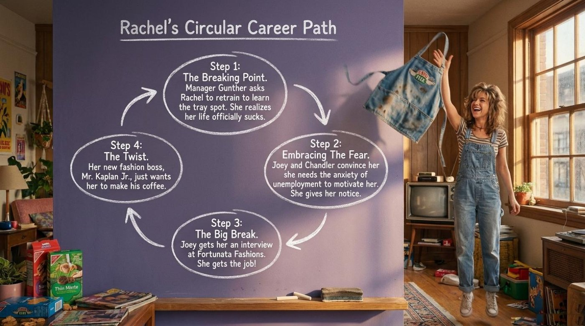
Ross’s storyline gets the deck’s most cinematic treatment, under the headline “The Cookie Dude Strategy.” The slide lays the story out in four neon-lit boxes. “The Accident: Ross accidentally injures a Brown Bird (Girl Scout) named Sarah Tuttle with a racket.” “The Goal: To win Sarah a trip to Space Camp, he must sell over 400 boxes of cookies at $5 each.” “The Tactic: Ross hits NYU college dorms at midnight to sell cases of cookies to hungry students leaving Laser Floyd shows.” And the heartbreaker: “The Defeat: Ross sells 872 boxes but loses to a girl whose sister sold 2,000 boxes on an aircraft carrier.”
The deck’s own example shows how sales English works in the wild, because it explains that “Ross claims he is an honorary Brown Bird when trying to sell cookies to a suspicious neighbor.” The word honorary lets Ross borrow a title he never earned, and the sentence is a miniature masterclass in persuasion vocabulary. It should also be noted that the strategy slide is quietly about target customers: Ross succeeds at first because he connects a product to a need, which the deck captures in its note that “Ross realizes college students get the munchies at midnight, making them perfect cookie customers.”
“Ross hits NYU college dorms at midnight to sell cases of cookies to hungry students leaving Laser Floyd shows.”
— the lesson deck, on Ross’s tactic
The transferable lesson for readers is that storytelling and selling share a grammar. The deck’s four labels — accident, goal, tactic, defeat — are the same labels a project manager or a startup founder uses every day. Practice retelling any small mishap of your week with those four headings, and you will be rehearsing business narrative in English without noticing the effort.
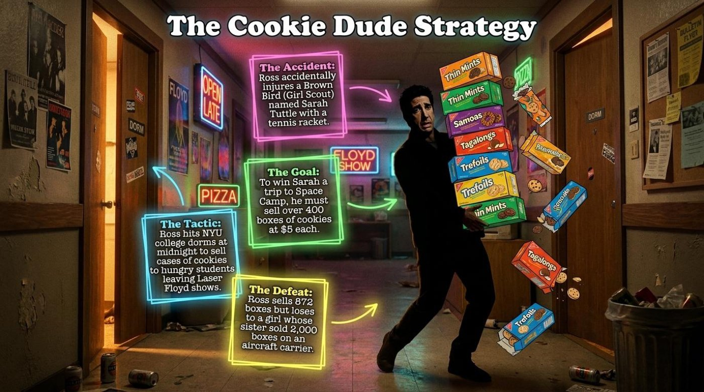
The third storyline is a clash of philosophies, and the deck stages it as a split screen titled “The Christmas Tree Conflict.” On one side stands commerce. The slide explains: “Joey’s Reality: Joey gets a seasonal job selling trees. He explains that healthy trees are bought, while old, brown trees are thrown into the woodchipper to make room for fresh inventory.” On the other side stands conviction: “Phoebe’s Philosophy: Phoebe believes trees are innocent beings with a Christmas destiny.” The resolution is pure sitcom diplomacy, because “to compromise, Monica and Joey buy all the dead trees and set them up in the apartment to fulfill their destiny.”
The deck’s example of this conflict in action comes from the belief-and-business vocabulary set: “Joey begs Phoebe to stop driving customers away because he works on commission and needs the sales.” That single sentence contains the entire economic argument of the subplot, and it shows how the phrase drive customers away pairs naturally with work on commission in real business talk. Notice also Phoebe’s emphatic grammar in the deck’s paraphrase: “Phoebe suddenly decides she is totally against cutting down trees and putting tinsel on their corpses.” The pattern to be against + gerund is one of the most useful structures in the whole lesson.
“Phoebe’s Philosophy: Phoebe believes trees are innocent beings with a Christmas destiny.”
— the lesson deck, on the moral heart of the subplot
The practical takeaway from this slide is the art of describing both sides of an argument. English loves paired framings like reality versus philosophy, commerce versus conscience, and inventory versus innocence. Try narrating your next disagreement at work using one side’s vocabulary and then the other’s, exactly as the deck does, and you will feel your argumentative range expand.
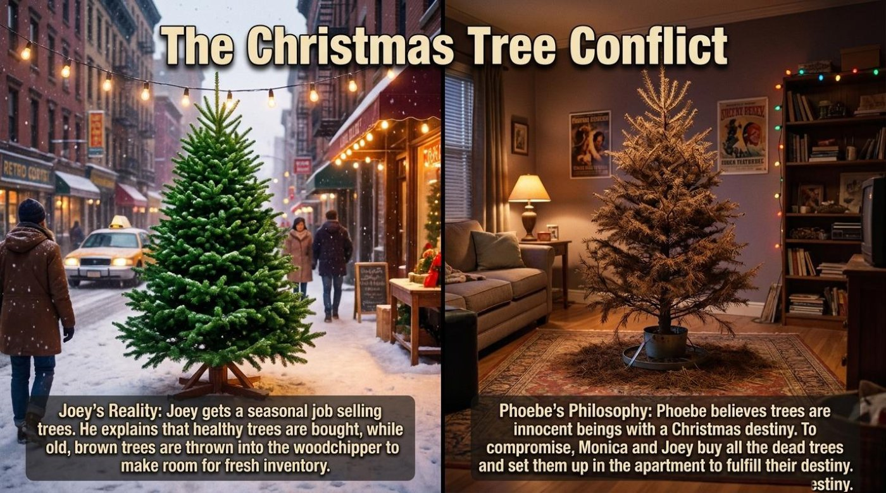
The deck builds its vocabulary program in three themed sets, and each entry follows the same friendly formula: the word, its part of speech, a clean definition, and a Sitcom Context sentence that pins the phrase to the plot. This section walks through all nine items in plain text, quotes the deck’s explanations, and then hands everything over to the interactive flip-cards below. The theme that unites the three sets is ambition under pressure: Rachel chasing a career, Ross chasing redemption, and Joey chasing sales while Phoebe chases justice for trees.
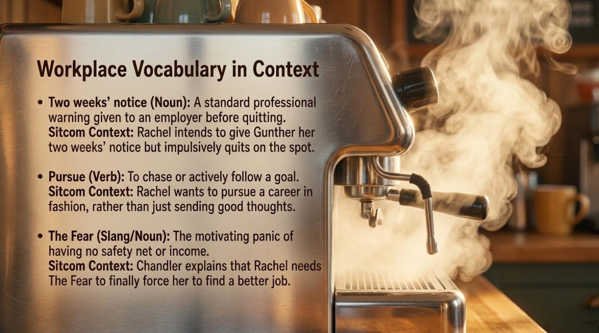
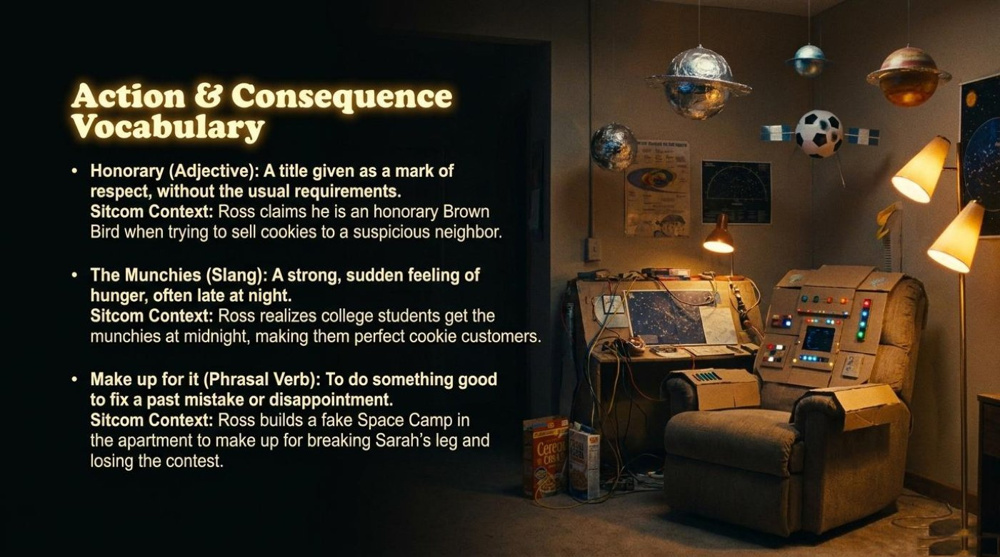
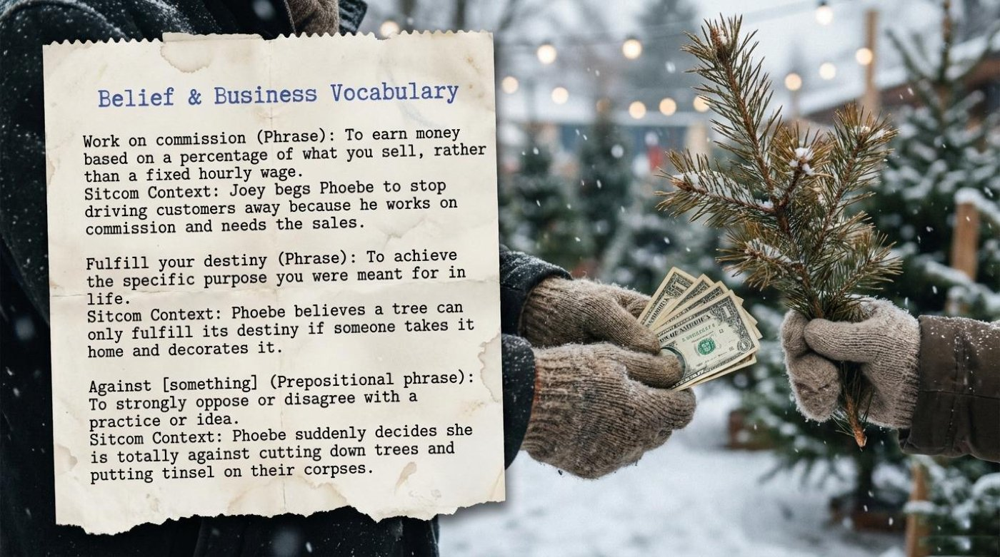
⚠️ One more gem hides in the deck’s translation matrix, which is titled “The Translation Matrix: Sitcom to Real World.” It maps four expressions to their real-world usage with model sentences a learner can copy today: the notice letter to your boss, the fear that pushes a graduate to apply everywhere, the commission that makes a car salesperson negotiate hard, and the dinner that makes up for a forgotten birthday. The deck’s whole philosophy sits in that single notebook page: sitcom English is real English, and the bridge between them is one rewritten sentence of your own.
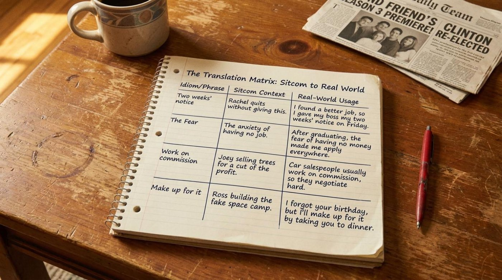
The flip-cards below gather the lesson’s key terms into a single interactive deck. The front of each card shows the term, its part of speech, and a teaser; the back holds the literal meaning, the contextual meaning, an example from the material, and a short note on why the term matters. Tap or press Enter on any card to turn it over, and use the button to flip the whole deck at once.
Beneath the jokes, the deck treats the episode as a small museum of ideas, and four exhibits deserve a slow walk. Each one is a metaphor the slides build visually as well as verbally, and each one deepens the vocabulary it carries.
The deck capitalizes The Fear and turns a private emotion into a public character, which is exactly what a metaphor does. Its definition — “the motivating panic of having no safety net or income” — contains a deliberate paradox, because the slide insists this panic is motivating. The deck’s answer key completes the thought: “The Fear is the panic of having no income, which forces you to find a new job instead of being complacent.” The significance for a language learner is grammatical as well as emotional: the deck keeps pairing the word with the verb force — Chandler explains that Rachel needs The Fear “to finally force her to find a better job” — so learners absorb a whole argument pattern about pressure producing action.
Rachel’s career path is drawn, on purpose, as a circle with arrows, and the deck’s final step snaps the loop shut: “Her new fashion boss, Mr. Kaplan Jr., just wants her to make his coffee.” The symbol is the ironic circle — the dream job that reproduces the old job. The deck’s humor here is a lesson in narrative structure, because the phrase the twist labels the moment a story turns back on itself. It is important to understand that this shape is why the episode is still watched in classrooms: a circular plot gives students the satisfaction of recognition, and recognition is the first stage of remembering vocabulary.
The deck’s most poetic slide opposes two machines of meaning: the woodchipper, which turns old trees into fresh inventory, and the Christmas destiny, which turns them into innocent beings waiting for a living room. The deck states Phoebe’s creed directly — “Phoebe believes trees are innocent beings with a Christmas destiny” — and sharpens it with her protest against “cutting down trees and putting tinsel on their corpses.” The word corpses is the slide’s boldest choice, because it promotes trees to characters with lives worth mourning. The compromise that follows — “Monica and Joey buy all the dead trees and set them up in the apartment to fulfill their destiny” — shows the deck’s quiet thesis that conviction and commerce can be reconciled by creativity.
Ross’s apology is built from packing boxes, string lights, and audacity, and the deck reads it as a verb: “Ross builds a fake Space Camp in the apartment to make up for breaking Sarah’s leg and losing the contest.” The symbol matters because it makes make up for it visible. An apology in English can be a phrase, but the deck prefers a cardboard cockpit, and the slide’s joke — that a grown man in a suit is sitting in a recliner wrapped in brown paper — is precisely the kind of absurd image that fixes a phrasal verb in memory. The deck’s answer key confirms the motivation in one line, and the line is worth memorizing as a template for expressing amends.
The lesson ends the way every good lesson should: with a challenge. The deck supplies a trivia card titled “Central Perk Trivia: True or False?”, a short-answer round called “The Final Challenge,” and a handwritten Answer Key to settle every dispute. The trivia card asks learners to test their memory of the episode’s plot and vocabulary with four statements, including the claim that Rachel quits because she wants to work at the museum with Ross, and the claim that Joey is paid a high, fixed hourly rate for selling trees. The final challenge pushes further: it asks learners to explain what Chandler and Joey mean when they tell Rachel she needs The Fear, to describe why Ross builds a fake Space Camp in the apartment, and to write a sentence about their own lives using the phrase make up for it.
The interactive quiz below rebuilds that spirit with eight questions drawn directly from the deck, instant feedback on every click, and a running score. Read each question, choose an option, and watch the dots fill with green or red. A perfect score is entirely achievable after one careful read of this article.
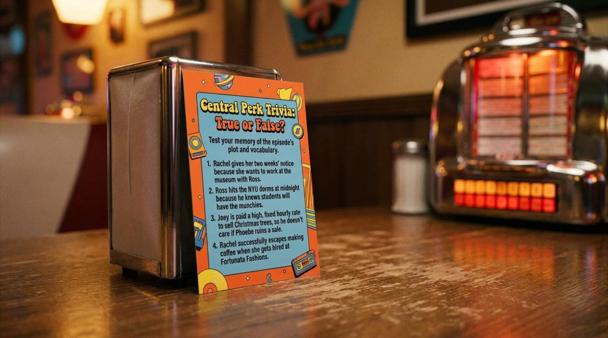
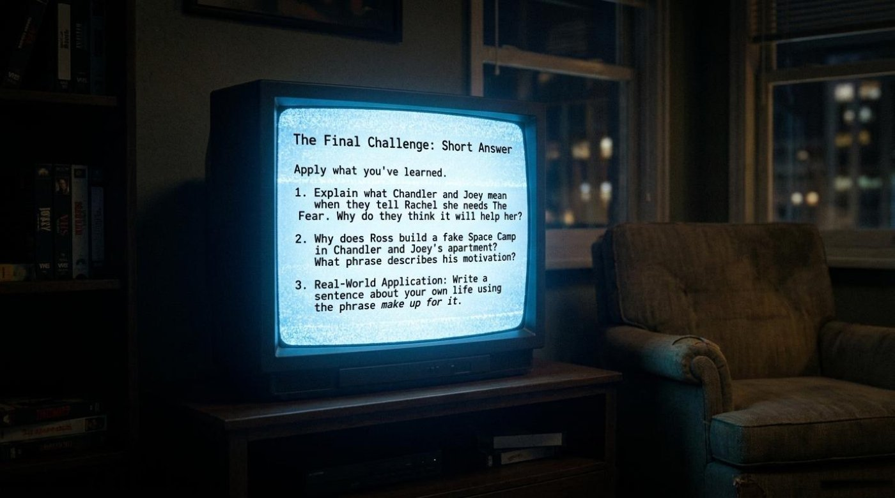
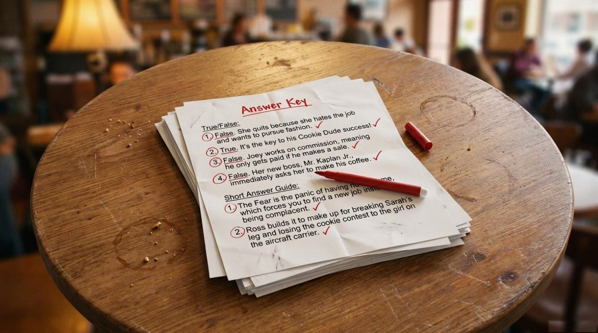
The deck saves its most unexpected inspiration for its quietest slide, where it reports Phoebe’s creed in full: “Phoebe believes trees are innocent beings with a Christmas destiny.” A comedy about nothing, the material insists, still carries a message about purpose — and the phrase fulfill your destiny turns out to describe not only a pine tree waiting for tinsel but also a learner waiting for fluency. The main takeaway from the final slides is that language grows when pressure meets action: The Fear forces Rachel forward, a broken leg forces Ross to improvise, and a woodchipper forces Phoebe to argue, and every one of those collisions produces a sentence worth stealing.
So take the deck’s final challenge personally and write one sentence about your own life using make up for it, then another using pursue, and one more about your own version of The Fear. Rewatch The One Where Rachel Quits with subtitles and listen for the nine expressions in their natural habitat, flip through the cards above once more, and take the quiz again until the dots run green. The golden button at the top of this article leads to the interactive game, and the lesson files below hold the full deck for a second, slower reading. Central Perk is always open, the coffee is always brewing, and your destiny — unlike the trees’ — is already in your hands.